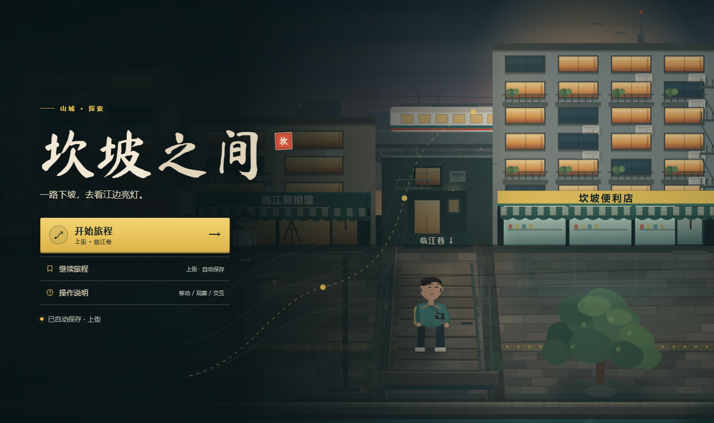
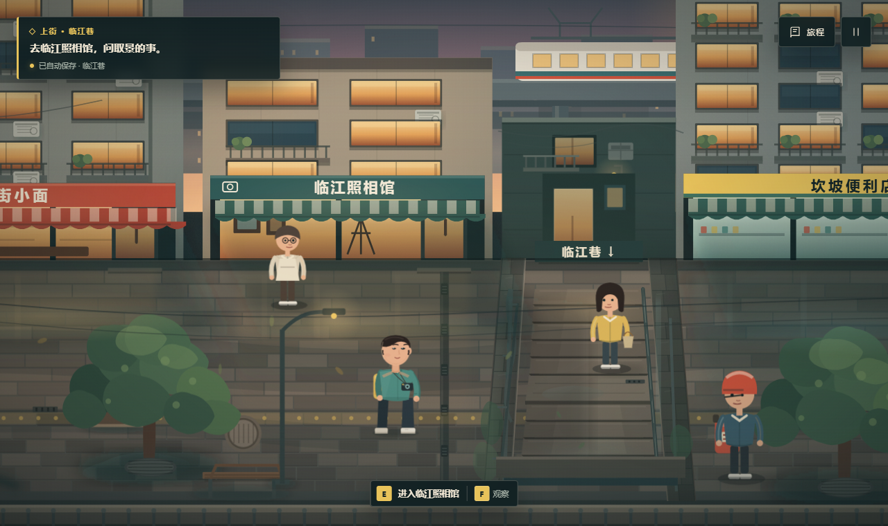
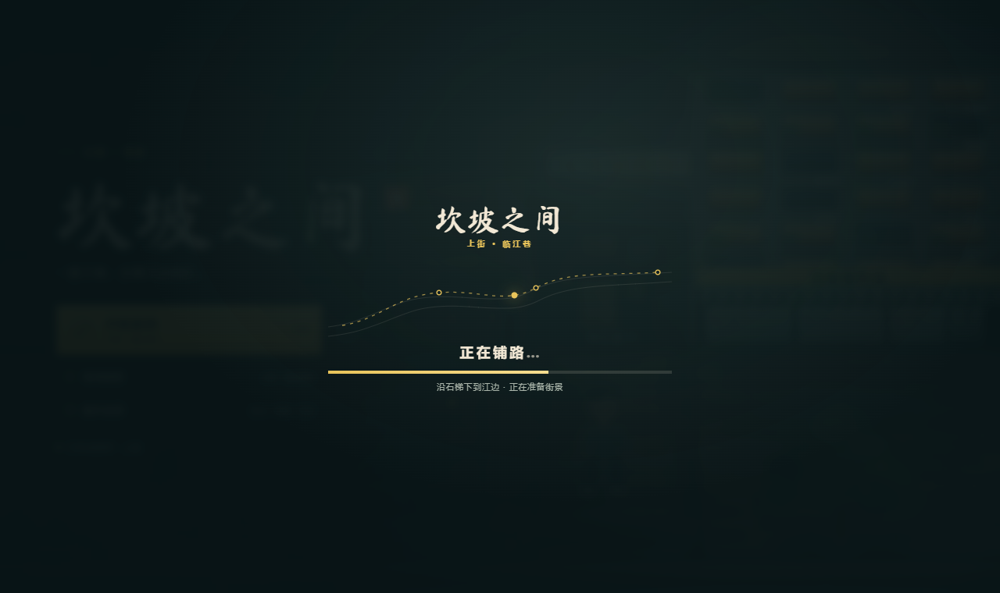
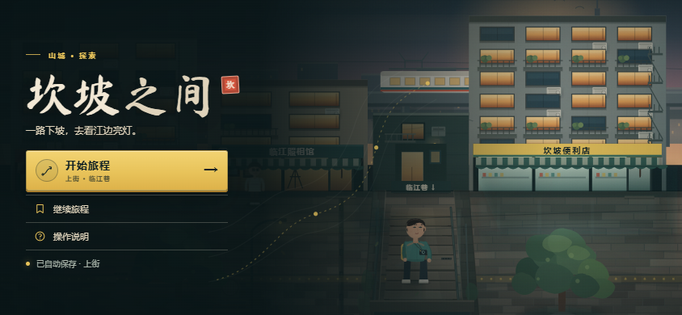
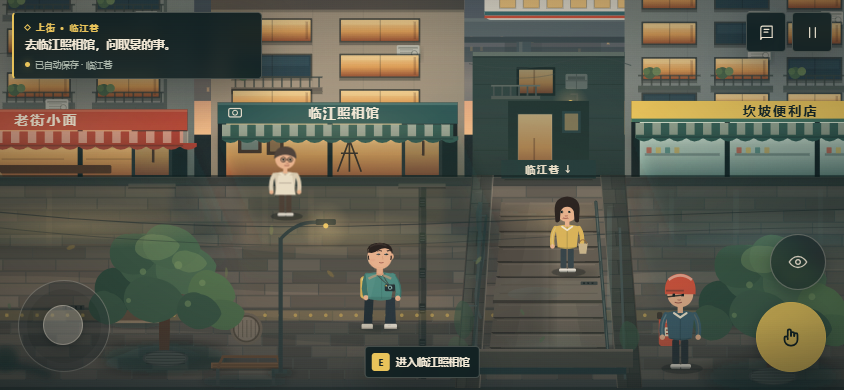
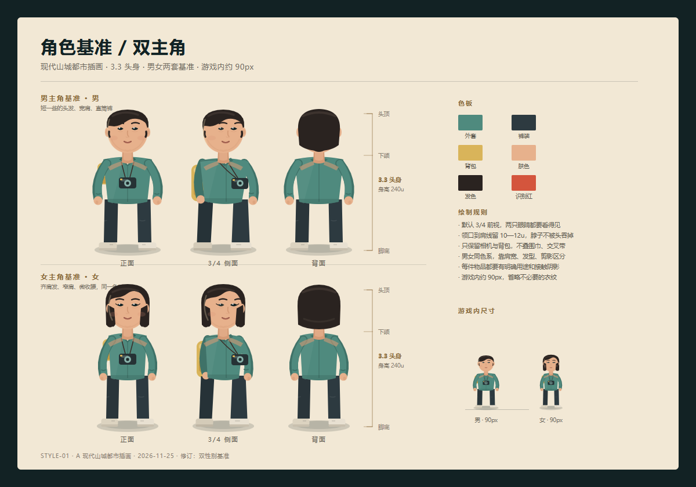

STYLE-01 / 视觉方向 A / 2026-11-25
这组样张用于确认《坎坡之间》的视觉方向：现代城市的生活质感，山城的坡坎结构，平涂色块加黄昏绘画光。 不是赛璐璐动画，也不是古风木构街。当前所有画面由 HTML / SVG 绘制，只验证方向与构图；没有改动 src/ 下的游戏代码。 本轮按负责人反馈重做了人物视角与比例、清理场景杂物、更换标题字体并加入加载动画。 负责人已确认先开发、后美化；游戏内主角先用明确的低精度临时占位，11-29 再按实际路线做美术回头。






场景人物改为 3/4 前视，两只眼睛同时可见；不再用严格侧脸。主角换用新的基准模型，脖子与肩线拉开，身上只保留相机和背包。
移掉屋顶白水箱、空中缆车、晾衣、重复竖牌、A 字牌、纸箱、堆叠盆栽与猫。保留店招、石梯、树、长椅、路灯和骑手；每件保留物有落点与接触阴影。
游戏名改用仓库现有 Pokan Title 子集（OFL，随字体附授权文件）；主按钮加路线图标与两行层级，次按钮改成单列行式；按下、悬停和键盘焦点都有状态。
新增可演示的加载层：路线、三个途经点、移动光点、进度条与“正在铺路”。样张点击开始后约 1.9 秒进入上街；游戏内实施只接真实场景／资源就绪，不用固定计时器。Chrome headless 点击流程已跑通，6 张截图 pageErrors / consoleErrors 均为 0。
混凝土、卷帘门、玻璃、空调、轻轨、索道、外卖箱。山城体现在坡、坎、梯、错层，不靠古装符号。
大色块分形，不描粗黑边。黄昏侧逆光、店铺暖光、江面冷反光，阴影偏青绿，不用纯黑。
店招、长椅、行道树、路灯、外卖骑手、石梯的扶手。每个物件要有明确用途和落点；不确定是什么的东西，宁可删掉。
3.3 头身，约 90px；默认 3/4 前视，禁止单眼侧脸。男女同一色系，靠肩宽、发型与剪影区分；脚底必须有接触阴影。
只做标题、HUD、解放碑广场出生街区与主角临时占位；复用现有主线、存档、碰撞与输入，不新造“临江照相馆”或新地图。
先用实际游玩路线截图看观感，再定中街／江岸／室内的统一范围；技术通过不等于美术通过。
STYLE-02A 完成并经 Work 审查后再安排下一项；不在本轮并行开新的实施窗口。